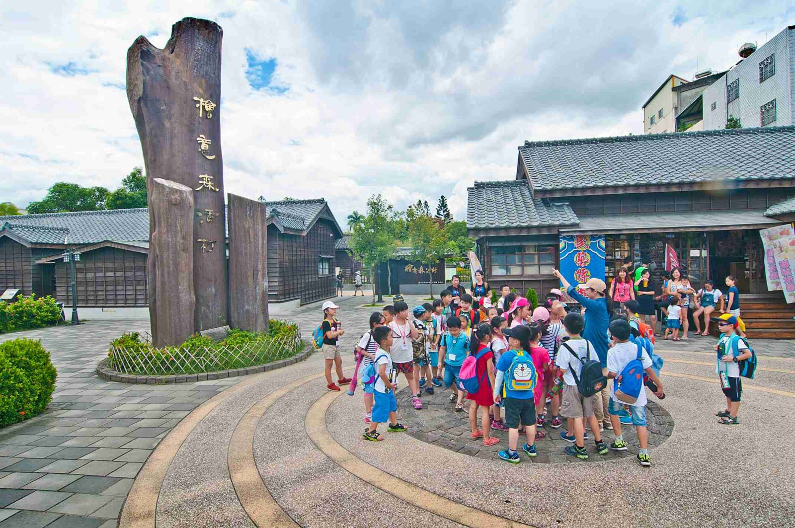
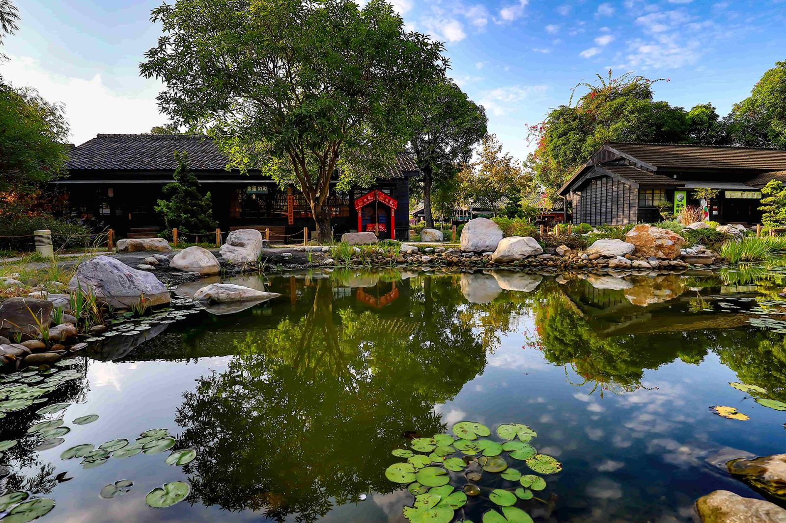
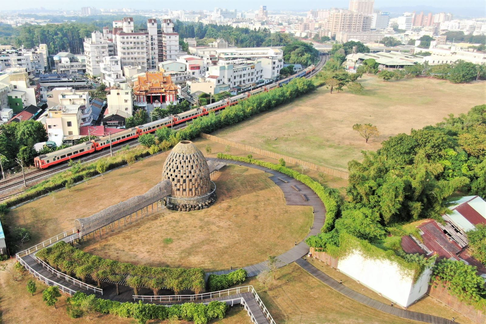
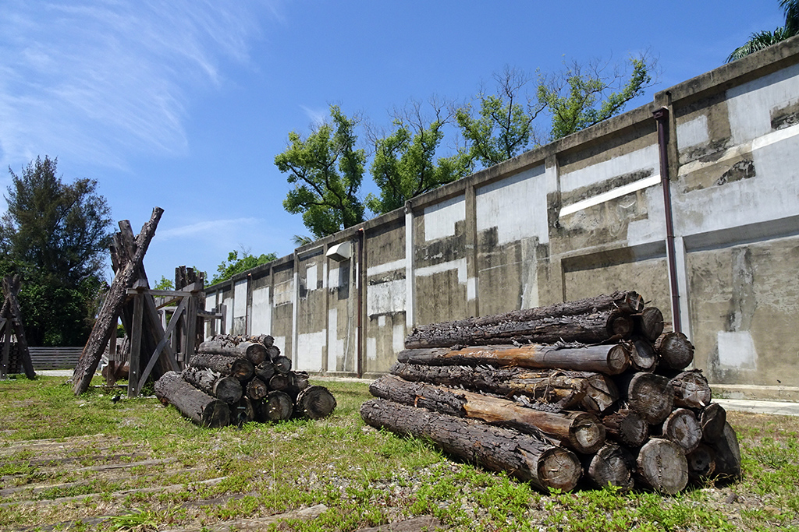
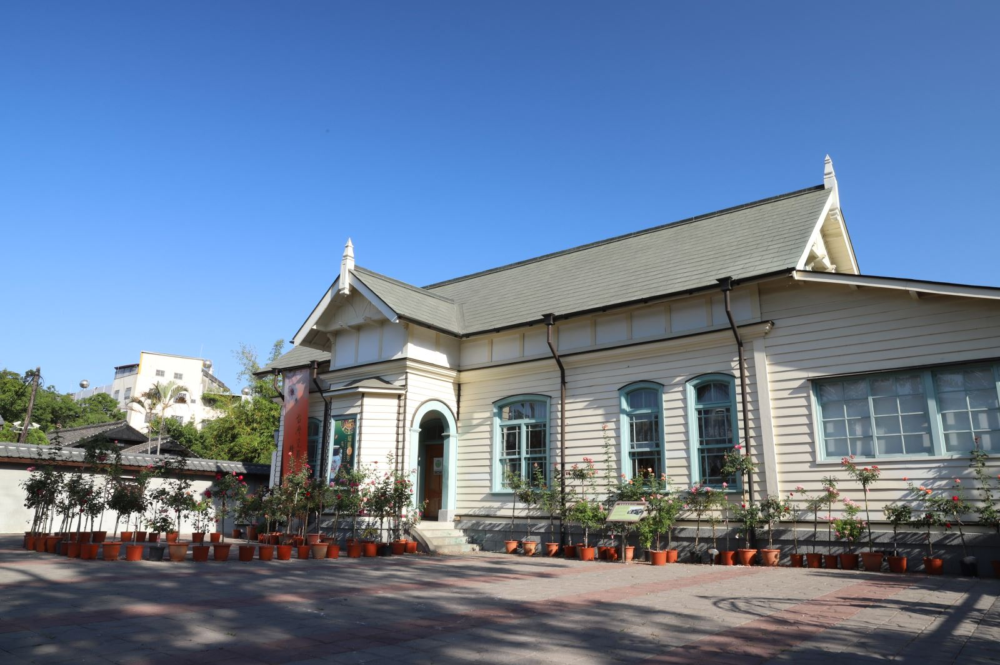

園區融入「林業文化—環境教育—工藝設計—文化創意—生活創意」等元素，打造出全國第一個以「森林文創」為主題的文創園區，規劃出文創市集、活動展覽、設計精品、工藝精品、農業精品、企業形象、咖啡餐飲等不同的主題區塊，於103年1月起辦理營運。

入口意象是以三根阿里山紅檜原木高聳矗立之造型，作為迎賓「年輪廣場」，該紅檜為自阿里山之同一棵風倒木運下後矗立在此，象徵著「森」林生命力及阿里山神木意象，廣場上有一約600年的原木橫切面年輪，呈現樹木成長之生命週期，延續林業發展並展現生生不息的力量。
瞭解更多
「檜意森活村」建築結構依格局不同，區分為「一戶建」、「二戶建」、「四戶連棟」等型式。 檜意森活村歷史建築修復計畫，重新檢討空間機能及戶外空間，保留米徑20公分以上老樹植栽並加入綠美化景觀改善。新規劃設置景觀水池，兼具緊急防火功能。
瞭解更多
1910年成立直屬於臺灣總督府之阿里山作業所，其下設嘉義出張所，1916年改為總督府營林局嘉義出張所，1920年改制為總督府殖產局營林所嘉義出張所，本棟即為嘉義出張所所長宿舍。
瞭解更多阿里山目前為國際觀光旅遊景點，日據時期與太平山、八仙山並稱臺灣三大林場。因應阿里山林場檜木資源而闢建阿里山森林鐵路，起點就在嘉義市北門，木材買賣集散為嘉義市帶來前所未有的繁榮，當時更因此列為臺灣四大都市之一。

1914年完工啟用，是日治時期日本政府佔地範圍最廣大的官營木材產業園區，具有當時歐美最先進的設施及技術，負責貯存阿里山上砍伐下山的木頭，承擔加工木頭成為「木材」的重要任務。如今製材所已不再運作，但仍保存許多的歷史建築及遺構，以及曾為杉池的廣大綠地，是嘉義市區難得的文化靜謐場域。
瞭解更多運用林務局提供之木材、鐵軌及石材等素材，提供民眾體驗自然情境。銅編金色圓頂，陽光灑入金色光芒，月色及星光變換；主體內部櫸木、檜木地板，充滿芬多精氣味。穿透的環繞外型，透露出更多自然觀賞野趣。藉著透空圓頂，呈現日夜變化的天幕，大自然在阿里山間的變化，時時都讓人驚訝！民眾進入其中，猶如踏在雲端般自在，體驗阿里山的五感享受。
瞭解更多
嘉義車庫園區日治時期舊名「北門修理工場」，原址設於1910年10月平地段通車時的北門機關庫，隨著鐵路的施工陸續擴充，才於大正元年(西元1912年)正式啟用，主要工作為建造修理阿里山鐵路各式機車、客車、貨車，迄今已將近百年的歷史。
瞭解更多